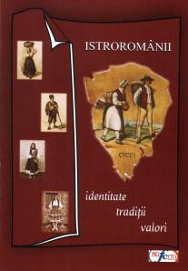

Stimate Domnule Deputat Vlad Cubreacov, numele meu este Elena Ramona Potoroacă și sunt muzeograf în cadrul Complexului Național Muzeal "ASTRA" din Sibiu. Anul trecut am avut oportunitatea de a câștiga proiectul cultural Istroromânii – consolidarea și permanentizarea valorilor și tradițiilor, finanțat de Administrația Fondului Cultural Național.
 Dumneavoastră ați fost informat de derularea acestui proiect de căre doamna conf. univ. dr. Viorica Bălteanu din Timișoara, prin care ați avut bunăvoința de a ne trimite un mesaj de salut, citit la deschiderea manifestărilor dedicate comunităii de istroromâni din Croația.
Chiar dacă este cam târziu, țin să vă mulțumesc personal pentru gândurile frumoase trimise și totodată pentru ceea ce încercați să faceți pentru acești români de peste hotare uitați de propria țară. Vreau să cred că acest proiect a fost doar un prim pas în deschiderea unor noi drumuri spre alte proiecte.
Noi am realizat câteva lucruri, acum ni se par mărunte, dar atunci le priveam cu multă încărcătură și putere de a schimba ceva. Am fost în satele lor timp de 10 zile pentru a-i cunoaște la ei acasă, pentru a-i întreba despre obiceiurile și tradițiile actuale dar și despre cele străbune etc. Apoi i-am invitat la Sibiu (după ce au fost la Timișoara), pentru a cunoaște încă o mică parte din România, pentru a fi printre noi și a ne bucura cu frumoasele dansuri istriene, dar și de vestiții "zvonciari". Am avut bucuria de a-l avea printre noi și pe domnul Ervino Curtis, organizatorul excepționalei expoziții Istroromânii ieri și azi.
În cadrul simpozionului Istroromânii – repere cutural-istorice, am încercat să reunim oameni de cultură, dar și oameni politici, în speranța găsirii unor soluții viabile și totodată pentru o uriașă promovare în rândul publicului care (cel puțin cel sibian) s-a arătat dornic de a-i cunoaște.
În urma simpozionului am editat volumul Istroromânii: identitate, tradiții, valori, cu toate lucrările susținute, dar și cu o galerie fotografică.
Vă trimit și Dumneavoastră un volum, mulțumindu-vă pentru tot ceea ce faceți pentru istroromâni, și pentru că ne-ați susținut în cadrul manifestărilor dedicate lor.
Dorința mea este de a continua acest proiect, în primul rând prin traducerea volumului în limbile italiană și engleză, dar și prin realizarea unei școli de vară, împreună cu specialiștii din Timișoara etc. Sperăm în sprijinul Ministerului de Externe, cu toate că va fi foarte greu.
Cu multă considerație,
Elena Ramona Potoroacă
February 5, 2009
© 2009 Vlad Cubreacov Wordpress